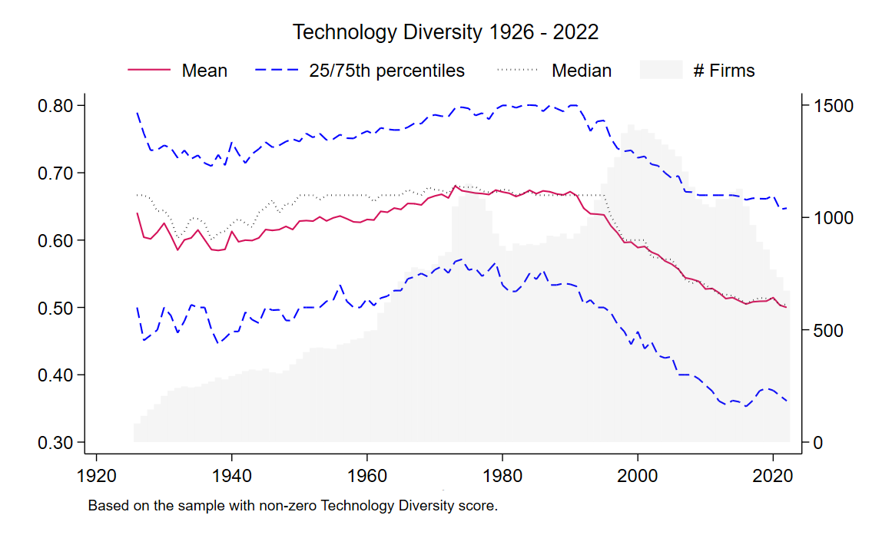

Technology Diversity
![]()
This posts constructs the firm-year technology diversity measure as in Hsu et al. (2018).
Introduction
In Hsu et al. (2018), a firm’s technology diversity is measured by the concentration of its patents over a set of technology categories. Specifically, a firm-year’s technology diversity score is 1 minus the HHI based on the distribution of technology categories for which a firm’s patents are filed in the most recent three years (i.e., 1 minus the sum of the squared percentages of patents in individual technology categories) multiplied by an adjustment factor that is the patent number divided by the patent number minus 1.1
1 This adjustment factor aims to correct the downward bias of diversification measures when the number of patents is small, as suggested by Hall, Jaffe, and Trajtenberg (2001).
If a firm has the following patents in the most recent three years:
| Patent | Technology Category |
|---|---|
| A | X |
| B | Y |
| C | Y |
The firm’s 1 minus the HHI based on the distribution of technology categories is \(1-[(\frac{1}{3})^2+(\frac{2}{3})^2]=0.444\).
Given the adjustment factor, 0.444 is then multiplied by \(\frac{3}{2}\) so that the diversity score is 0.667.
In Hsu et al. (2018), a total of 6 technology categories is used: (a) chemical, (b) computer and communications, (c) drugs and medical, (d) electrical and electronics, (e) mechanical, and (f) others, as classified by Hall, Jaffe, and Trajtenberg (2001).
However, now is 2024, the patent classification systems have evolved into the Cooperative Patent Classification (CPC). With CPC, a patent’s classification code may look like: C07D 203/00. The first letter is the Section Symbol. The next two is a 2-digit number for Class, followed by a single letter for Subclass. The remainder is Main Group Symbol and Subgroup Symbol.
What best resembles Hsu et al. (2018) is the use of Section, or the first letter. Therefore, we will have a total of 9 technology categories whilst Hsu et al. (2018) have 6. Specifically, the table below tabulates the technology categories.
| Letter | CPC Section | IPC Section |
|---|---|---|
| A | Human Necessities | Human Necessities |
| B | Performing Operations; Transporting | Performing Operations; Transporting |
| C | Chemistry; Metallurgy | Chemistry; Metallurgy |
| D | Textiles; Paper | Textiles; Paper |
| E | Fixed Construction | Fixed Construction |
| F | Mechanical Engineering; Lighting; Heating; Weapons; Blasting Engines or Pumps | Mechanical Engineering; Lighting; Heating; Weapons; Blasting Engines or Pumps |
| G | Physics | Physics |
| H | Electricity | Electricity |
| Y | General Tagging of New Technological Developments; General Tagging of Cross-over technologies spanning over several sections of the IPC; technical subjects covered by former USPC cross reference art collections and digest |
Patent data
The goto source for U.S. firm’s patent data is Kogan et al. (2017), which can be download via GitHub. This well-known KPSS dataset contains many features and is more than enough for the calculation of technology diversity.
Simply download and unzip the datasets and below is my code to produce the technology diversity measure.
Stata Code
This code runs fairly fast making use of Mata.
/*
This Stata code calculates the Technology Diversity score measure in
Hsu et al. (2018 REStat) using the KPSS patent data.
Download and unzip the KPSS data to the current working directory.
Author: Mingze Gao
Date: 2024-07-20
For detail, see https://mingze-gao.com/posts/technology-diversity/
Paramters:
- use_primary_cpc: Set to 1 to use only the primary CPC, 0 to use all
Note:
1. This code uses the patents granted, not patents filed.
2. This code uses CPC section code to define 9 technology categories.
In Hsu et al. (2018), a total of 6 categories were used.
3. A patent can have multiple CPC codes. For example,
Patent 1570692 has the following CPC codes:
E05F5/025;Y10T16/628;Y10T16/6285;E05Y2900/531
If we use only primary CPC, it would be 1 E.
If we use all CPC codes, it would be 2 E and 2 Y.
*/
/******************************************************************************/
**# Paramters & Setup
/******************************************************************************/
local use_primary_cpc = 1 // Set to 0 to use all CPC codes
confirm file "KPSS_2022.csv"
confirm file "Match_patent_cpc_2022.csv"
cwf default
clear all
/******************************************************************************/
**# CPC technology categories
/******************************************************************************/
cap frame drop cpc
mkf cpc
cwf cpc
import delimited "Match_patent_cpc_2022.csv", clear
cap drop cpc_*
foreach section of newlist a b c d e f g h y {
gen cpc_`section' = 0
}
putmata cpc*
mata:
for (i=1; i<=rows(cpc); i++) {
if (st_local("use_primary_cpc") == 0) {
s = ustrsplit(cpc[i], ";")
for (j=1; j<=cols(s); j++) {
sec = substr(s[j], 1, 1)
if (sec=="A") cpc_a[i] = cpc_a[i] + 1
else if (sec=="B") cpc_b[i] = cpc_b[i] + 1
else if (sec=="C") cpc_c[i] = cpc_c[i] + 1
else if (sec=="D") cpc_d[i] = cpc_d[i] + 1
else if (sec=="E") cpc_e[i] = cpc_e[i] + 1
else if (sec=="F") cpc_f[i] = cpc_f[i] + 1
else if (sec=="G") cpc_g[i] = cpc_g[i] + 1
else if (sec=="H") cpc_h[i] = cpc_h[i] + 1
else if (sec=="Y") cpc_y[i] = cpc_y[i] + 1
}
} else {
sec = substr(cpc[i], 1, 1)
if (sec=="A") cpc_a[i] = cpc_a[i] + 1
else if (sec=="B") cpc_b[i] = cpc_b[i] + 1
else if (sec=="C") cpc_c[i] = cpc_c[i] + 1
else if (sec=="D") cpc_d[i] = cpc_d[i] + 1
else if (sec=="E") cpc_e[i] = cpc_e[i] + 1
else if (sec=="F") cpc_f[i] = cpc_f[i] + 1
else if (sec=="G") cpc_g[i] = cpc_g[i] + 1
else if (sec=="H") cpc_h[i] = cpc_h[i] + 1
else if (sec=="Y") cpc_y[i] = cpc_y[i] + 1
}
}
end
getmata cpc_a cpc_b cpc_c cpc_d cpc_e cpc_f cpc_g cpc_h cpc_y, update
/******************************************************************************/
**# Match to firm
/******************************************************************************/
cwf default
mkf kpss
// Patent, permno, issue year
frame kpss {
import delimited "KPSS_2022.csv", clear
keep patent_num permno issue_date
tostring issue_date, replace format(%20.0f)
gen edatevar = date(issue_date,"YMD")
format edatevar %td
drop issue_date
rename edatevar issue_date
gen year = year(issue_date)
}
cap frame drop kpss2
frame copy kpss kpss2
frame copy kpss2 y
frame copy kpss2 y1
frame copy kpss2 y2
frame y {
tempfile y
save `y'
}
frame y1 {
replace year = year + 1
tempfile y1
save `y1'
}
frame y2 {
replace year = year + 2
tempfile y2
save `y2'
}
// Permno-year w/o gap
frame kpss {
keep permno year
duplicates drop
xtset permno year
tsfill
}
frame copy kpss pat0 // patents granted in the current year t
frame copy kpss pat1 // patents granted in the year t-1
frame copy kpss pat2 // patents granted in the year t-2
frame pat0 {
merge 1:m permno year using `y', nogen keep(match)
tempfile pat0
save `pat0'
}
frame pat1 {
merge 1:m permno year using `y1', nogen keep(match)
tempfile pat1
save `pat1'
}
frame pat2 {
merge 1:m permno year using `y2', nogen keep(match)
tempfile pat2
save `pat2'
}
cwf default
append using `pat0'
append using `pat1'
append using `pat2'
sort permno year
gen patent_issue_year = year(issue_date)
drop issue_date
/******************************************************************************/
**# Calculate technology diversity
/******************************************************************************/
frlink m:1 patent_num, frame(cpc) gen(cpc_link)
frget cpc_*, from(cpc_link)
drop cpc_link
collapse (sum) cpc_* (count) patent_num, by(permno year)
xtset permno year
tsfill
egen __total = rowtotal(cpc*)
replace __total = . if patent_num == .
foreach cpc of varlist cpc_a-cpc_y {
replace `cpc' = `cpc' / __total
replace `cpc' = `cpc' * `cpc'
}
egen hhi = rowtotal(cpc*)
replace hhi = . if patent_num == .
gen _1m_hhi = 1 - hhi
gen technology_diversity = _1m_hhi * (patent_num) / (patent_num-1)
replace patent_num = 0 if patent_num == .
// For firms that have only one patent, set the score to 0
replace technology_diversity = 0 if patent_num == 1
// For firmw without patents, set the score to 0
replace technology_diversity = 0 if patent_num == 0
keep permno year patent_num technology_diversity
label var patent_num "Patents granted in the previous 3 years"
label var technology_diversity "Technology Diversity"
// Clean up
frame drop kpss* pat* y y1 y2
exit
/******************************************************************************/
**# Additional stuff
/******************************************************************************/
cwf default
cap frame drop extra
frame copy default extra
cwf extra
su technology_diversity, d
hist technology_diversity if technology_diversity > 0
keep if technology_diversity > 0
collapse (mean) mean = technology_diversity ///
(median) p50 = technology_diversity ///
(p25) p25 = technology_diversity ///
(p75) p75 = technology_diversity ///
(count) n = permno, by(year)
tsset year
twoway ///
(tsline mean, lcolor(stred)) ///
(tsline p25, lcolor(blue) lpattern(dash)) ///
(tsline p75, lcolor(blue) lpattern(dash)) ///
(tsline p50, lcolor(black) lpattern(dot)) ///
(tsline n, fcolor(gray%10) lcolor(none) recast(bar) yaxis(2)) ///
, ///
yline(0, lwidth(vvthin) lpattern(dash) extend) ///
ylabel(, format(%9.2f) nogrid) ttitle(, size(zero)) ///
ytitle("", axis(2)) ///
tlabel(, nogrid) title("Technology Diversity 1926 - 2022", size(medium) span) ///
legend(rows(1) order(1 "Mean" 2 "25/75th percentiles" 4 "Median" 5 "# Firms") ///
pos(12) lcolor(none) region(fcolor(none))) ///
name(timeseries, replace) ///
note("Based on the sample with non-zero Technology Diversity score.")
graph export "timeseries.png", name(timeseries) replace as(png)The distribution of firms’ technology diversity over the period is plotted below.

Because a patent can have multiple CPC codes, using all CPC codes means that a patent can be assigned to multiple technology categories. This in general does not cause a major problem, but could lead to a firm’s technology diversity score to be larger than 1.
Consider a firm with two patents granted in the recent years, the adjustment factor would be 2, effectively doubling (1-HHI). When the two patents yield a HHI smaller than 0.5, the firm’s Technology Diversity score would be greater than 1. It occurs when the two patents belong to say 3 technology categories.
In Hsu et al. (2018), the maximum Technology Diversity score is 1. It is hence very likely that a patent can belong to only one category. Therefore, I set the default parameter use_primary_cpc to 1.
Somewhat interestingly, in the recent decades firms’ technology diversity seems to be declining. Put differently, firms are increasingly specialized in their technology space. My current working projects involve some use of firm technology diversity.
Other measures
Some other measures of “technology diversity” include, for example, Miller (2006), which is a little harder to construct and skipped.